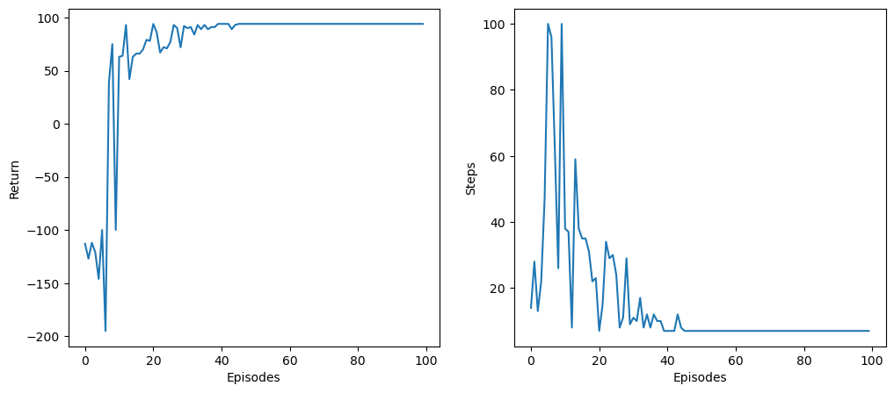
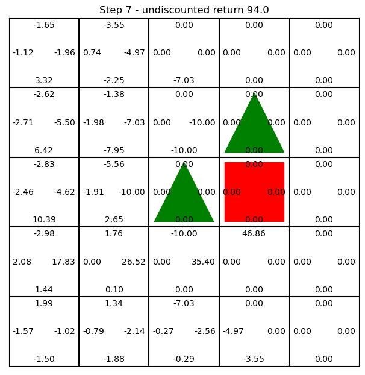
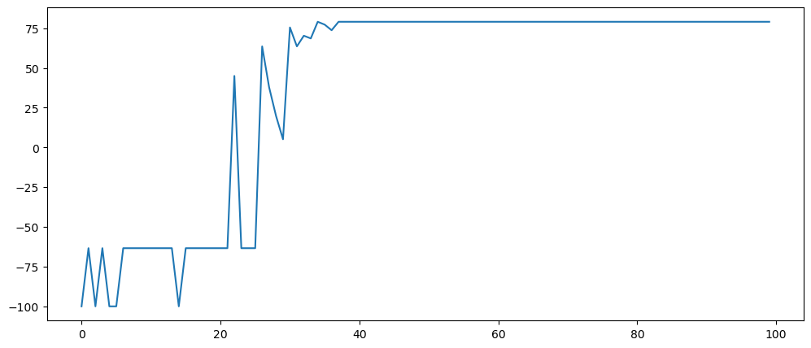
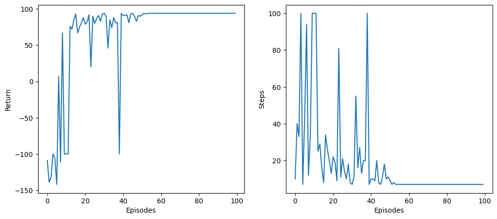

try:
import google.colab
IN_COLAB = True
except:
IN_COLAB = False
if IN_COLAB:
!pip install -U gymnasium pygame moviepy
!pip install gymnasium[box2d]Eligibility traces
import numpy as np
rng = np.random.default_rng()
import matplotlib.pyplot as plt
import os
from IPython.display import clear_output
import gymnasium as gym
print("gym version:", gym.__version__)
import pygame
from moviepy.editor import ImageSequenceClip, ipython_display
class GymRecorder(object):
"""
Simple wrapper over moviepy to generate a .gif with the frames of a gym environment.
The environment must have the render_mode `rgb_array_list`.
"""
def __init__(self, env):
self.env = env
self._frames = []
def record(self, frames):
"To be called at the end of an episode."
for frame in frames:
self._frames.append(np.array(frame))
def make_video(self, filename):
"Generates the gif video."
directory = os.path.dirname(os.path.abspath(filename))
if not os.path.exists(directory):
os.mkdir(directory)
self.clip = ImageSequenceClip(list(self._frames), fps=self.env.metadata["render_fps"])
self.clip.write_gif(filename, fps=self.env.metadata["render_fps"], loop=0)
del self._frames
self._frames = []
def running_average(x, N):
kernel = np.ones(N) / N
return np.convolve(x, kernel, mode='same')gym version: 0.26.3Q-learning in Gridworld
Random interaction with the environment
The goal of this exercise is to solve the Gridworld problem using Q-learning. The code is adapted from https://gymnasium.farama.org/tutorials/environment_creation/
The agent is represented by the blue circle: the state s of the agent is its position in the 5x5 grid, i.e. a number between 0 and 24.
The agent can move either to the left, right, top or bottom. When the agent tries to move outside of the environment, it stays at its current position. There are four actions a available, which are deterministic.
Its goal is to reach the green circle, while avoiding the red ones. Actions leading to the green circle receive a reward r of +100, actions leading to a red square receive a reward of -100. The episode ends in those states. All other actions have a reward of -1. An episode stops after 100 steps if a goal has not been reached.
class GridWorldEnv(gym.Env):
metadata = {"render_modes": ["human", "rgb_array", "rgb_array_list"], "render_fps": 4}
def __init__(self, render_mode=None, size=5, rewards=[100, -100, -1]):
self.size = size # The size of the square grid
self.window_size = 512 # The size of the PyGame window
self.rewards = rewards
self._step = 0
# The state is the flattened (x, y) coordinate of the agent
self.observation_space = gym.spaces.Discrete(size**2)
# Goal location
self._target_location = np.array([3, 2], dtype=int)
self._distractor1_location = np.array([3, 1], dtype=int)
self._distractor2_location = np.array([2, 2], dtype=int)
# We have 4 actions, corresponding to "right", "up", "left", "down"
self.action_space = gym.spaces.Discrete(4)
self._action_to_direction = {
0: np.array([1, 0]), # right
1: np.array([0, 1]), # down
2: np.array([-1, 0]), # left
3: np.array([0, -1]), # up
}
assert render_mode is None or render_mode in self.metadata["render_modes"]
self.render_mode = render_mode
if self.render_mode == "rgb_array_list":
self._frames = []
self.window = None
self.clock = None
self.font = pygame.font.SysFont(None, 16)
self.Q = np.zeros((self.observation_space.n, self.action_space.n))
def _state2coordinates(self, state):
"Returns coordinates of a state."
return (state % self.size, int(state/self.size))
def _coordinate2state(self, coord):
"Returns the state with the coordinates."
return coord[1] * self.size + coord[0]
def reset(self, seed=None, options=None):
self._step = 0
# Initial location
self._agent_location = np.array([0, 0], dtype=int)
if self.render_mode == "human":
self._render_frame()
if self.render_mode == "rgb_array_list":
self._frames = []
self._render_frame()
return self._coordinate2state(self._agent_location), {}
def step(self, action):
# Map the action (element of {0,1,2,3}) to the direction we walk in
direction = self._action_to_direction[action]
# We use `np.clip` to make sure we don't leave the grid
self._agent_location = np.clip(
self._agent_location + direction, 0, self.size - 1
)
# An episode is done if the agent has reached the target or the distractors
if np.array_equal(self._agent_location, self._target_location):
terminal = True
reward = self.rewards[0]
elif np.array_equal(self._agent_location, self._distractor1_location) \
or np.array_equal(self._agent_location, self._distractor2_location):
terminal = True
reward = self.rewards[1]
else:
terminal = False
reward = self.rewards[2]
if self.render_mode == "human" or self.render_mode == "rgb_array_list":
self._render_frame()
self._step += 1
if self._step == 100:
truncated = True
else:
truncated = False
return self._coordinate2state(self._agent_location), reward, terminal, truncated, {}
def render(self):
if self.render_mode == "rgb_array":
return self._render_frame()
elif self.render_mode == "rgb_array_list":
f = self._frames.copy()
self._frames = []
return f
def _render_frame(self):
if self.window is None and self.render_mode == "human":
pygame.init()
pygame.display.init()
self.window = pygame.display.set_mode(
(self.window_size, self.window_size)
)
if self.clock is None and self.render_mode == "human":
self.clock = pygame.time.Clock()
canvas = pygame.Surface((self.window_size, self.window_size))
canvas.fill((255, 255, 255))
pix_square_size = (
self.window_size / self.size
) # The size of a single grid square in pixels
# First we draw the target and the distractors
pygame.draw.rect(
canvas,
(0, 255, 0),
pygame.Rect(
pix_square_size * self._target_location,
(pix_square_size, pix_square_size),
),
)
pygame.draw.rect(
canvas,
(255, 0, 0),
pygame.Rect(
pix_square_size * self._distractor1_location,
(pix_square_size, pix_square_size),
),
)
pygame.draw.rect(
canvas,
(255, 0, 0),
pygame.Rect(
pix_square_size * self._distractor2_location,
(pix_square_size, pix_square_size),
),
)
# Now we draw the agent
pygame.draw.circle(
canvas,
(0, 0, 255),
(self._agent_location + 0.5) * pix_square_size,
pix_square_size / 3,
)
# Add some gridlines
for x in range(self.size + 1):
pygame.draw.line(
canvas,
0,
(0, pix_square_size * x),
(self.window_size, pix_square_size * x),
width=3,
)
pygame.draw.line(
canvas,
0,
(pix_square_size * x, 0),
(pix_square_size * x, self.window_size),
width=3,
)
# Print Q-values
for x in range(self.size):
for y in range(self.size):
s = self._coordinate2state((x, y))
# Up
val = f"{self.Q[s, 3]:+.2f}"
text = self.font.render(val, True, (0, 0, 0))
canvas.blit(text,
((x + 0.5) * pix_square_size - 6,
(y) * pix_square_size + 6)
)
# Down
val = f"{self.Q[s, 1]:+.2f}"
text = self.font.render(val, True, (0, 0, 0))
canvas.blit(text,
((x + 0.5) * pix_square_size - 6,
(y+1) * pix_square_size - 12)
)
# Left
val = f"{self.Q[s, 2]:+.2f}"
text = self.font.render(val, True, (0, 0, 0))
canvas.blit(text,
((x) * pix_square_size + 6,
(y+ 0.5) * pix_square_size - 6)
)
# Right
val = f"{self.Q[s, 0]:+.2f}"
text = self.font.render(val, True, (0, 0, 0))
canvas.blit(text,
((x + 1) * pix_square_size - 32,
(y+ 0.5) * pix_square_size - 6)
)
if self.render_mode == "human":
# The following line copies our drawings from `canvas` to the visible window
self.window.blit(canvas, canvas.get_rect())
pygame.event.pump()
pygame.display.update()
# We need to ensure that human-rendering occurs at the predefined framerate.
# The following line will automatically add a delay to keep the framerate stable.
self.clock.tick(self.metadata["render_fps"])
elif self.render_mode == "rgb_array":
return np.transpose(
np.array(pygame.surfarray.pixels3d(canvas)), axes=(1, 0, 2)
)
elif self.render_mode == "rgb_array_list":
array = np.transpose(
np.array(pygame.surfarray.pixels3d(canvas)), axes=(1, 0, 2)
)
self._frames.append(array)
def close(self):
if self.window is not None:
pygame.display.quit()
pygame.quit()class RandomAgent:
def __init__(self, env):
self.env = env
self.Q = np.zeros((self.env.observation_space.n, self.env.action_space.n))
def act(self, state):
"Selects an action randomly"
return self.env.action_space.sample()
def train(self, nb_episodes, recorder=None):
"Runs the agent on the environment for nb_episodes."
# Returns
returns = []
steps = []
# Fixed number of episodes
for episode in range(nb_episodes):
# Reset
state, info = self.env.reset()
done = False
nb_steps = 0
# Store rewards
return_episode = 0.0
# Sample the episode
while not done:
# Select an action
action = self.act(state)
# Perform the action
next_state, reward, terminal, truncated, info = self.env.step(action)
# Append reward
return_episode += reward
# Go in the next state
state = next_state
# Increment time
nb_steps += 1
# Terminal state
done = terminal or truncated
# Pass the Q table to the GUI
self.env.Q = self.Q
# Store info
returns.append(return_episode)
steps.append(nb_steps)
return returns, steps# Create the environment
env = GridWorldEnv(render_mode='human')
# Create the agent
agent = RandomAgent(env)
# Perform random episodes
returns, steps = agent.train(2)Q: Adapt your Q-learning agent from last exercise to the problem. The main difference is the call to self.env.Q = self.Q so that the GUI displays the Q-values, the rest is similar. Train it for 100 episodes with the right hyperparameters and without rendering.
class QLearningAgent:
"""
Q-learning agent.
"""
def __init__(self, env, gamma, exploration, decay, alpha):
"""
:param env: gym-like environment
:param gamma: discount factor
:param exploration: exploration parameter
:param decay: exploration decay parameter
:param alpha: learning rate
"""
self.env = env
self.gamma = gamma
self.exploration = exploration
self.decay = decay
self.alpha = alpha
# Q_table
self.Q = np.zeros([self.env.observation_space.n, self.env.action_space.n])
def act(self, state):
"Returns an action using epsilon-greedy action selection."
action = rng.choice(np.where(self.Q[state, :] == self.Q[state, :].max())[0])
if rng.random() < self.exploration:
action = self.env.action_space.sample()
return action
def update(self, state, action, reward, next_state, done):
"Updates the agent using a single transition."
# Bellman target
target = reward
if not done:
target += self.gamma * self.Q[next_state, :].max()
# Update the Q-value
self.Q[state, action] += self.alpha * (target - self.Q[state, action])
# Decay exploration parameter
self.exploration = self.exploration * (1 - self.decay)
def train(self, nb_episodes, recorder=None):
"Runs the agent on the environment for nb_episodes."
# Returns
returns = []
steps = []
# Fixed number of episodes
for episode in range(nb_episodes):
# Reset
state, info = self.env.reset()
done = False
nb_steps = 0
# Store rewards
return_episode = 0.0
# Sample the episode
while not done:
# Select an action
action = self.act(state)
# Perform the action
next_state, reward, terminal, truncated, info = self.env.step(action)
# Terminal state
done = terminal or truncated
# Append reward
return_episode += reward
# Learn from the transition
self.update(state, action, reward, next_state, done)
# Go in the next state
state = next_state
# Increment time
nb_steps += 1
# Pass the Q table to the GUI
self.env.Q = self.Q
# Store info
returns.append(return_episode)
steps.append(nb_steps)
if recorder is not None:
recorder.record(self.env.render())
return returns, steps
def test(self, recorder=None):
"Performs a test episode without exploration."
previous_epsilon = self.epsilon
self.epsilon = 0.0
# Reset
state, info = self.env.reset()
done = False
nb_steps = 0
return_episode= 0
# Sample the episode
while not done:
action = self.act(state)
next_state, reward, done, info = self.env.step(action)
return_episode += reward
state = next_state
nb_steps += 1
self.epsilon = previous_epsilon
if recorder is not None:
recorder.record(self.env.render())
return return_episode, nb_steps# Parameters
gamma = 0.99
epsilon = 0.1
decay_epsilon = 0
alpha = 0.1
nb_episodes = 100
# Create the environment
env = GridWorldEnv(render_mode=None)
# Create the agent
agent = QLearningAgent(env, gamma, epsilon, decay_epsilon, alpha)
# Train the agent
returns, steps = agent.train(nb_episodes)
plt.figure(figsize=(12, 5))
plt.subplot(121)
plt.plot(returns)
plt.xlabel("Episodes")
plt.ylabel("Return")
plt.subplot(122)
plt.plot(steps)
plt.xlabel("Episodes")
plt.ylabel("Steps")
plt.show()Q: Train a Q-learning agent with rendering on. Observe in particular which Q-values are updated when the agent reaches the target. Is it efficient?
# Parameters
gamma = 0.99
epsilon = 0.1
decay_epsilon = 0
alpha = 0.1
nb_episodes = 10
# Create the environment
env = GridWorldEnv(render_mode='human')
# Create the agent
agent = QLearningAgent(env, gamma, epsilon, decay_epsilon, alpha)
# Train the agent
returns, steps = agent.train(nb_episodes)Q: Modify your agent so that it uses softmax action selection, with a temperature \tau = 1.0 and a suitable decay. What does it change?
If you have time, write a generic class for the Q-learning agent where you can select the action selection method flexibly.
class SoftQLearningAgent(QLearningAgent):
"""
Q-learning agent with softmax or e-greedy AS.
"""
def __init__(self, env, gamma, action_selection, alpha):
"""
:param env: gym-like environment
:param gamma: discount factor
:param action selection: exploration mechanism
:param alpha: learning rate
"""
self.action_selection = action_selection
super().__init__(env, gamma, action_selection['param'], action_selection['decay'], alpha)
def act(self, state):
"Returns an action using epsilon-greedy or softmax action selection."
if self.action_selection['type'] == "egreedy":
# epsilon-greedy
if rng.uniform(0, 1, 1) < self.exploration:
action = self.env.action_space.sample()
else:
action = rng.choice(np.where(self.Q[state, :] == self.Q[state, :].max())[0])
else:
# softmax
logits = np.exp((self.Q[state, :] - self.Q[state, :].max())/self.exploration)
probas = logits / np.sum(logits)
action = rng.choice(range(4), p=probas)
return action
# Parameters
gamma = 0.99
#action_selection = {'type': "egreedy", "param": 0.1, "decay": 0.0}
action_selection = {'type': "softmax", "param": 1.0, "decay": 0.0}
alpha = 0.1
nb_episodes = 100
# Create the environment
env = GridWorldEnv(render_mode=None)
# Create the agent
agent = SoftQLearningAgent(env, gamma, action_selection, alpha)
# Train the agent
returns, steps = agent.train(nb_episodes)
plt.figure(figsize=(12, 5))
plt.subplot(121)
plt.plot(returns)
plt.xlabel("Episodes")
plt.ylabel("Return")
plt.subplot(122)
plt.plot(steps)
plt.xlabel("Episodes")
plt.ylabel("Steps")
plt.show()
A: The agent explores much less at the end of training, as the difference between the Q-values becomes high enough to become greedy. In particular, it quickly stops to go to the red squares. In this environment, there is no real need to decay tau.
Eligibility traces
The main drawback of Q-learning is that it needs many episodes to converge (sample complexity).
One way to speed up learning is to use eligibility traces, one per state-action pair:
traces = np.zeros((nb_states, nb_actions))After each transition (s_t, a_t), Q(\lambda) updates a trace e(s_t, a_t) and modifies all Q-values as:
- The trace of the last transition is incremented from 1:
e(s_t, a_t) = e(s_t, a_t) +1
- Q(\lambda)-learning is applied on ALL Q-values, using the TD error at time t:
Q(s, a) = Q(s, a) + \alpha \, (r_{t+1} + \gamma \, \max_{a'} Q(s_{t+1}, a') - Q(s_t, a_t)) \, e(s, a)
- All traces are exponentially decreased using the trace parameter \lambda (e.g. 0.7):
e(s, a) = \lambda \, \gamma \, e(s, a)
All traces are reset to 0 at the beginning of an episode.
Q: Implement eligibility traces in your Q(\lambda)-learning agent and see if it improves convergence. Train it with rendering on and observe how all Q-values are updated.
class QLambdaLearningAgent(SoftQLearningAgent):
"""
Q(lambda)-learning agent with softmax or e-greedy AS and eligibility traces.
"""
def __init__(self, env, gamma, lbda, action_selection, alpha):
"""
:param env: gym-like environment
:param gamma: discount factor
:param lbda: trace
:param action selection: exploration mechanism
:param alpha: learning rate
"""
self.lbda = lbda
# Traces
self.traces = np.zeros([env.observation_space.n, env.action_space.n])
super().__init__(env, gamma, action_selection, alpha)
def update(self, state, action, reward, next_state, done):
# Bellman target
target = reward
if not done:
target += self.gamma * self.Q[next_state, :].max()
# Update ALL Q-values
self.Q += self.alpha * (target - self.Q[state, action]) * self.traces
# Decay exploration parameter
self.exploration = self.exploration * (1 - self.decay)
def train(self, nb_episodes, recorder=None):
"Runs the agent on the environment for nb_episodes."
# Returns
returns = []
steps = []
# Fixed number of episodes
for episode in range(nb_episodes):
# Reset
state, info = self.env.reset()
done = False
nb_steps = 0
# Reset traces
self.traces *= 0.0
# Store rewards
return_episode = 0.0
# Sample the episode
while not done:
# Select an action
action = self.act(state)
# Perform the action
next_state, reward, terminal, truncated, info = self.env.step(action)
# Terminal state
done = terminal or truncated
# Update return
return_episode += reward
# Increment trace
self.traces[state, action] += 1
# Learn from the transition
self.update(state, action, reward, next_state, done)
# Update all traces
self.traces *= self.gamma * self.lbda
# Go in the next state
state = next_state
# Increment time
nb_steps += 1
# Pass the Q table to the GUI
self.env.Q = self.Q
# Store info
returns.append(return_episode)
steps.append(nb_steps)
if recorder is not None:
recorder.record(self.env.render())
return returns, steps# Parameters
gamma = 0.99
lbda = 0.7
#action_selection = {'type': "egreedy", "param": 0.1, "decay": 0.0}
action_selection = {'type': "softmax", "param": 1.0, "decay": 0.0}
alpha = 0.1
nb_episodes = 100
# Create the environment
env = GridWorldEnv()
# Create the agent
agent = QLambdaLearningAgent(env, gamma, lbda, action_selection, alpha)
# Train the agent
returns, steps = agent.train(nb_episodes)
plt.figure(figsize=(12, 5))
plt.subplot(121)
plt.plot(returns)
plt.xlabel("Episodes")
plt.ylabel("Return")
plt.subplot(122)
plt.plot(steps)
plt.xlabel("Episodes")
plt.ylabel("Steps")
plt.show()
# Parameters
gamma = 0.99
lbda = 0.7
#action_selection = {'type': "egreedy", "param": 0.1, "decay": 0.0}
action_selection = {'type': "softmax", "param": 1.0, "decay": 0.0}
alpha = 0.1
nb_episodes = 10
# Create the environment
env = GridWorldEnv(render_mode='human')
# Create the agent
agent = QLambdaLearningAgent(env, gamma, lbda, action_selection, alpha)
# Train the agent
returns = agent.train(nb_episodes)Q: Vary the trace parameter \lambda and discuss its influence.
# Parameters
gamma = 0.99
#action_selection = {'type': "egreedy", "param": 0.1, "decay": 0.0}
action_selection = {'type': "softmax", "param": 1.0, "decay": 0.0}
alpha = 0.1
nb_episodes = 100
list_returns = []
for lbda in np.linspace(0.1, 1.0, 10):
# Create the environment
env = GridWorldEnv()
# Create the agent
agent = QLambdaLearningAgent(env, gamma, lbda, action_selection, alpha)
# Train the agent
returns, steps = agent.train(nb_episodes)
list_returns.append(returns)
plt.figure(figsize=(12, 6))
for idx, lbda in enumerate(np.linspace(0.1, 1.0, 10)):
plt.plot(list_returns[idx], label=str(lbda))
plt.legend()
plt.show()
A: \lambda should not be too high nor too low in order to speed up learning. It controls the bias/variance trade-off.
Q: Increase the size of Gridworld to 100x100 and observe how long it takes to learn the optimal strategy using eligibility traces or not.
env = GridWorldEnv(size=100)Comment on the curse of dimensionality and the interest of tabular RL for complex tasks with large state spaces and sparse rewards (e.g. robotics).
# Parameters
gamma = 0.99
lbda = 0.7
#action_selection = {'type': "egreedy", "param": 0.1, "decay": 0.0}
action_selection = {'type': "softmax", "param": 1.0, "decay": 0.0}
alpha = 0.1
nb_episodes = 100
# Create the environment
env = GridWorldEnv(size=100)
# Create the agent
agent = SoftQLearningAgent(env, gamma, action_selection, alpha)
#agent = QLambdaLearningAgent(env, gamma, lbda, action_selection, alpha)
# Train the agent
returns, steps = agent.train(nb_episodes)
plt.figure(figsize=(12, 5))
plt.subplot(121)
plt.plot(returns)
plt.xlabel("Episodes")
plt.ylabel("Return")
plt.subplot(122)
plt.plot(steps)
plt.xlabel("Episodes")
plt.ylabel("Steps")
plt.show()
A: When the Gridworld is too big, the likelihood to hit the target per chance when exploring is very low. There are a lot of unsuccessful trials before learning starts to occur. But it happens after a while.